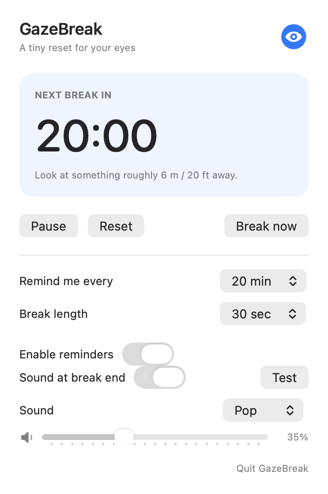
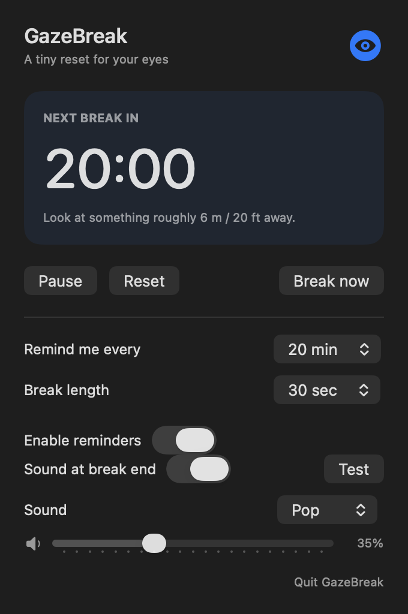

The guide / Start here
A little distance,
a simple routine.
Install GazeBreak, choose your rhythm, and let the menu bar handle the reminders.
01 / Installation
Start in the menu bar.
GazeBreak runs on macOS 13 or later. The Homebrew tap currently distributes an Apple Silicon build. Universal Apple Silicon and Intel builds are available as experimental previews; check the release notes for each download.
- Install Homebrew if you do not already have it.
- Run these commands in Terminal:
brew tap apil-khadka/tap
brew install --cask gazebreakOpen GazeBreak from Applications. Look for its icon in the menu bar at the top of the screen. It does not open a main window or appear in the Dock.
Prefer a manual download?
Choose a ZIP from Releases, unzip it, and move GazeBreak.app into Applications. Read the architecture and signing notes for your chosen version. Current experimental builds are ad-hoc signed and are not notarized by Apple; they are intended for testing.
02 / Everyday use
Open it when you need it.
Hover over the menu-bar icon to see the focus countdown. Click the icon to open the controls. Pause holds your remaining time; Resume continues it. Reset starts a fresh interval.
The next update adds Break now, explicit outside-click dismissal, and Escape to close. It also stops second-by-second background work when the countdown is hidden.


03 / Breaks
A brief pause in close focus.
The default rhythm is 20 minutes of focus followed by a 30-second reminder. The floating reminder stays visible across Spaces. Let its countdown finish, or choose Skip or I’m back to return sooner.
Published versions include a longer reset after accumulated focus time. The next version removes that cycle: every reminder will use your configured short break length. It also adds Snooze 5 min, which postpones a reminder without changing your usual interval.
04 / Preferences
Set your rhythm.
| Control | Choices |
|---|---|
| Focus interval | 20, 30, 45, or 60 minutes |
| Break length | 20, 30, 45, or 60 seconds |
| Enable reminders | Turn reminders on or off |
| Sound at break end | On or off |
| Sound and volume | Pop, Tink, Ping, Glass, or Bottle; adjustable volume |
Settings are saved between launches. Sound selection and volume are available in the 0.1.5 experimental preview and later versions. Use Test to preview the completion sound.
05 / Maintenance
Stay up to date.
For a Homebrew install:
brew update
brew upgrade --cask gazebreakFor a manual install, quit GazeBreak and replace the app in Applications with the new download. Your settings remain saved. Read Releases to see what changed.
Uninstall
Quit GazeBreak from its menu. For Homebrew, run brew uninstall --cask gazebreak. For a manual install, move GazeBreak.app from Applications to the Trash.
06 / Common questions
A few useful details.
Why is there no Dock icon?
GazeBreak is a menu-bar app. Open its controls from the icon at the top of your screen.
What happens when my Mac sleeps?
The focus timer pauses around display sleep and inactive sessions. The next version also keeps screen and session pauses separate so waking the display cannot resume a still-locked session.
Does it send usage data anywhere?
The app has no analytics, account, or network code. Its timer and preferences run locally. This website loads fonts from Google Fonts, uses public GitHub release information, and requests the public repository star count from GitHub.
Can I see the source or report a problem?
The app is open source under Apache 2.0. Visit the GitHub repository for source, build instructions, and issues.
Does GazeBreak provide medical advice?
No. It is a reminder tool, not a diagnosis or treatment.